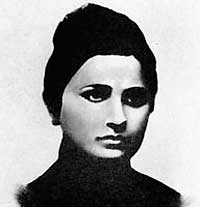
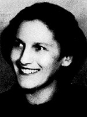
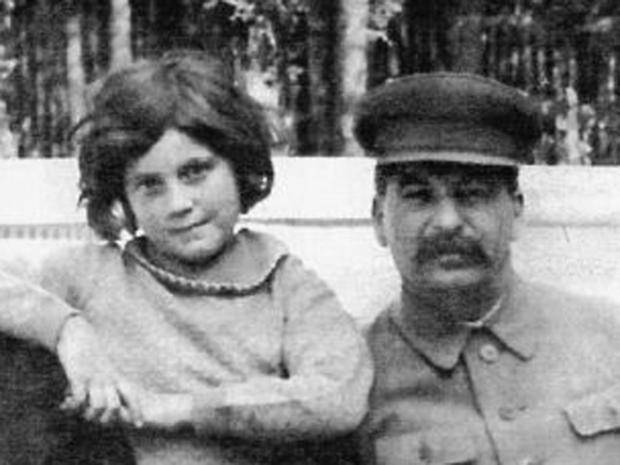
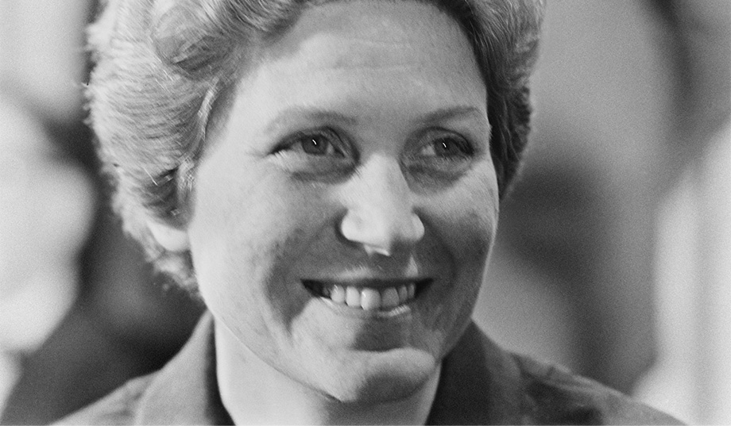

XXVIII - SVETLANA
Sau khi Lénine chết, tháng 1 năm 1924, Đại hội Đảng Cộng Sản Liên Nga họp đề cử người thay thế vị lãnh tụ tối cao của Cộng Sản Đệ tam Quốc Tế. Bà Kroupskzia, quả phụ của Lénine, yêu cầu đọc bản di chúc chính trịnh của chồng bà để cho toàn thể Đại hội nghe.
Trong bản di chúc, Lénine nhấn mạnh sự cần thiết phải tách rời Stalin era khỏi ghế Tổng bí thư đảng và thay thế vào chức vị đó một đồng chí khác, trung tín hơn, và không có lợi dụng uy quyền để phục vụ cá nhân”.
Trong quyển hồi ý “Với Staline ở Kremlin”, viên cựu thư ký của Staline là Bajanov có ghi một đoạn như sau đây:
“…Nhìn gương mặt tái mét của Staline thật là đáng thương. Ngồi trên dãy ghế chủ tịch đoàn đầu cúi gầm xuống, đôi mắt nahwms lại có vẻ như đang tập trung ý nghĩ để đối phó, ông lặng thinh, nhưng người ta thấy rõ thần kinh hệ của ông đang bị căng thẳng phi thường.
“May mắn cho ông, giữa không khí im lặng nặng nề của phòng họp, đồng chí Zinoviev đứng dậy tuyên bố nhân danh chủ tịch phái đoàn Leningrad, duy trì Staline ở lại chức vụ Tổng bí thư đảng. Thế là Zinoviev cứu được Staline. Lúc bấy giờ cầu chì công tơ điện của Kremlin bị hư, phòng Saint André nơi nhóm họp Đại hội bị chìm trong tối. Người ta thắp mấy ngòn đèn nến. Nhờ không khí lu mờ, nửa tối nửa sáng đó, Staline mới có can đảm đứng dậy, nói:
- Tôi xin Đại hội họp thi hành di chúc của Ilitch. Tôi xin từ chức.
Nhưng đó chỉ là một thủ đoạn, có lẽ đã sắp đặt trước, cho nên Zinoviev đứng dậy, nói rống lên:
- Đại hội đã thông qua vấn đề này rồi. Không cần bàn cãi nữa.
Staline liền nói tiếp:
- Nếu thế thì tôi xin tuân theo quyết định của Đại hội.
Công tơ điện đã được sửa chữa, đèn điện lại được bật lên, sáng trưng phòng họp. Staline mỉm cười, vui mừng được đa số đồng chí chấp thuận cho ông giữ nguyên chức vị cũ…”
Không bao lâu, nắm được trọn vẹn chính quyền trong tay. Staline thủ tiêu dần dần các đồng chí cũ đã giúp ông. Zinoviev cũng bị thanh toán luôn, và Staline trở nên một nhà chính trị độc tài tàn bạo và thâm hiểm nhất của nhân loại tự cổ chí kim, ngồi trên đầu trên cổ một dân tộc Một trăm sáu mươi lăm triệu người.
Không quá 10 năm, Djugachvili Staline, con của một ông thợ đóng giầy ở Georgie, đã được Cộng Sản Đệ Tam Quốc Tế suy tôn là “vị cha thiên tài của các dân tộc” (Le Père génial des Peuples).
BA VỢ THỨ NHẤT: EKATERINA SVANIDZE

Người này giúp cho ông rất nhiều trong những năm ông còn nghèo và chưa có chức vị gì. Quê mùa, không có học thức, nhưng rất tận tụy, lo cho chồng, và có với ông được một con trai, Iacha. Ông bỏ bê người con này, giao phó cho mẹ ông, bà Ekaterina Dougachvili mà ông thường gọi bằng tên tắt là Kéke Iacha, năm 1943, bị quân Đức bắt làm tù binh và bị bắn chết trong trại giam.
Bà Svanidzé bịnh phổi v à mất năm 1907, trước khi Cách mạng cộng sản thành công.
NGƯỜI VỢ THỨ HAI: NADEJDA ALLILOUÏEVA

Bà này là cựu nữ sinh viên Y khoa đã đỗ bằng bác sĩ, nhỏ hơn ông 27 tuổi. Lấy nhau không cưới hỏi, bà ở với ông được hai người con: một gái là cô Svetlana và một trai Bazile.
Ông đã ở địa vị tối cao của Đảng và của chánh phủ, được bà vợ trẻ rất tận tâm săn sóc, yêu thương. Nhưng tính tình tự do, khoáng đạt vì do ảnh hưởng văn nghệ, bà vẫn ghê tởm chánh sách sắt máu, mật vụ G.P.U.M.V.D của ông chồng độc tài quá tàn bạo. Bà cảm thấy rõ ràng dân chúng sợ hãi chồng bà hơn là thương mến, tôn sùng.
Không thích ở điện Kremlin với Staline, bà thường trực ở Datcha (biệt thự) Gorinka, cách thủ đô Moscou 45 ki lô mét. Datcha này rất sang trọng, lộng lẫy, có vườn rộng, có hồ tắm tân tiến, có bồi bếp, vú em, hầu hạ như một bà Hoàng. Staline cũng thường về đây nghỉ ngơi, sống đời vương giả không kém một vị Hoàng đế của thời Nga phong kiến. Nhưng hai vợ chồng cãi lộn luôn vì bất đồng tư tưởng chính trị. Bà thích tự do, ông thích độc tài. Thấy hai người con của ông, Svetlana và Bazile thường chứng kiến những cuộc cãi cọ, có nhiều khi xô xát giữa ông và bà, ông nổi giận tống hai người con về bên ngoại.
Ông lại truyền lệnh cho Iagoda, trưởng phòng mật vụ của ông dò xét hành động của bà. Thế rồi một hôm, ngày 5.10.1932, người ta thấy bà Nadejdo Allilouïeva (gọi tắt là Nadia) đến điện Kremlin, gọi điện thoại nói chuyện với chồng. Staline đang làm việc ở văn phòng Trung Ương Đảng bộ, gần đây. Không ai nghe rõ câu chuyện cãi cọ giữa hai ông bà như thế nào, chị biết rằng 15 phút sau đó bà rút súng lục trong bóp ra, tự bắn hai phát vào ngực, ngã gục xuống chết liền trong vũng máu.
Staline tỏ vẻ ân hận về cái chết của cô vợ trẻ nhưng truyền lệnh cho tất cả các cơ quan chính phủ phải giấu nhẹm cái tin bi kịch này. Hơn một tháng sau, ngày 8.11.1932, đài phát thanh Moscou mới được phép loan tin “bà chết vì bị bịnh nặng”.
Nữ bác sĩ Rosenfeld, bạn thân của bà, phản đối cái tin đó, và nói cho nhiều người biết rằng bà Allilouïeva không bị bịnh gì cả, chính bà đã tự tử bằng súng lục để phản đối chính sách tàn bạo dã man của Staline. Thế là hai hôm sau, bà bác sĩ Rosenfeld bị mật vụ bắt và đày đi Sibérie.
NGƯỜI VỢ THỨ BA: ROSA KAGANOVICH.

Bà này cũng trẻ, đẹp và lấy Staline cũng không có làm lễ cưới hỏi. Bà nguyên là một nữ công nhân làm việc ở nhà máy sợi Tadikestan. Staline đi kinh lý, thăm nhà máy, trông thấy cô gái duyên dáng 17 tuổi đang trông nom một máy dệt.
Ông truyền lệnh đưa cô về làm vợ. Rosa tỏ ra một tay nội trợ rất thành thạo, về xã giao cũng khôn khéo vô cùng. Mỗi tuần hai lần, cô tổ chức những cuộc tiếp tân và các dạ hội khiêu vũ rất đông đảo và hào hứng với sự tham gia vui vẻ của Staline.
Datcha (biệt điện) Gorinka trở thành nơi gặp gỡ của tất cả Ngoại giao đoàn, các Sứ thần ngoại quốc và các nhân vật cao cấp của “nhà nước Nga xô” cùng các phu nhân của họ.
Nhưng Staline vẫn tiếp tục chính sách khủng bố tàn ác của chế độ độc tài cộng sản.
Tháng 12 – 1934, Kirov, một đồng chí cao cấp của Staline, bị ám sát. Kế tiếp 3.000 cán bộ cao cấp khác bị bắt vì “phản cách mạng”. Tháng 9 – 1940, Staline trao quyền Mật vụ cho Béria…
Đến lượt bà Rosa Kaganovich, phu nhân thứ ba, cũng bị tình nghi “phản động”. Nhưng Rosa, thấy gương của bà vợ thứ hai, liền tuyên bố ly dị và biến mất. Năm 1941, không ai thấy bóng dáng của bà vợ trẻ đẹp, thông minh, lịch thiệp và duyên dáng kia đâu cả. Có dư luận đồn rằng bà bị mật vụ của Staline thủ tiêu. Mãi sau này, khi Staline chết rồi và bị Krouchev hạ bệ, Rosa mới xuất đầu lộ diện…
Té ra năm 1941, bà đã trốn đến vùng Oural bao la rừng núi và nơi đây bà đã bí mật kết hôn với một bác sĩ ở bệnh viện Sverdlovsk…

*Svetlana và Staline
Tháng 10-1939, Staline sắp sửa làm lễ ăn mừng 60 tuổi, thì xảy ra vụ cô con gái cưng của ông. Cả Moscou, trong chính phủ, trong đảng, cũng như trong ngoại giao đoàn, ai cũng biết rằng Staline rất quyến luyến cô con gái lớn độc nhất của ông. Svetlana được chiều chuộng hết sức. Ông mời một bà giáo sư Pháp ở Paris và một bà giáo sư Anh ở London sang Moscou để dậy cô học Pháp ngữ và Anh ngữ. Bây giờ Svetlana nói và rất thông thạo tiếng Pháp, tiếng Anh và tiếng Đức. Cô giao thiệp với nhiều bạn trai ở Đại học Moscou, trong đám này có sinh viên Mark Friedmann, người Đức, được cô yêu say mê. Cả hai đều là “đoàn viên thanh niên cộng sản”.
Svetlana nói cho cha biết lòng cô quyết định thành hôn với ý trung thành. Stavline cau mày, làm thinh. Hôm sau, cậu tình nhân đau khổ bị Tổng giám đốc Mật vụ Béria, gọi đến văn phòng, và được đưa lên xe lửa đẩy đi tuốt xuống tỉnh Magadan, trên bờ biển Thái bình Dương của hai phận Nga.
Được tin, Svetlana hăm dọa tìm cách đi theo người yêu. Thế rồi nàng biến mất, Staline, lần đầu tiên ngồi trong điện Kremlin, hai tay ôm mặt khóc nức nở. Ông truyền lịnh cho Béria phải tìm cho được con gái ông trong 24 tiếng đồng hồ, và cứ mỗi giờ, bất cứ ngày đêm, phải báo cáo cho ông biết kết quả cuộc lùng kiếm ấy.
Béria tìm được nàng trong nhà một cô bạn gái của nàng ở ngoại o Moscou. Lập tức nàng được đưa về điện Kremlin. Bị ông bố làm dữ, cô con gái đành phải hứa với ông là không kết hôn với Mark Fiedmann, nhưng cô đòi phải tức khắc đưa chàng về Moscou và để chàng tiếp tục học ở Đại học. Staline chấp nhận và Friedmann được trả về Đại học.
Rốt cuộc rồi, năm 1945, Svetlana cũng… lấy cho được người yêu.

Svetlana,năm 1967
Em trai của Svetlana, Buzite phục vụ trong Quân đội, được làm Đại tá Không quân Nga năm 1945, Chuẩn tướng năm 1948, Thiếu tướng năm 1952. Nhưng chàng cứ ở luôn trong trại với đồng đội, không thích về ở với cha.
Một thời gian được hưởng tình yêu trọn vẹn, nhưng không có con, Svetlana và Friedmann gây lộn với nhau về vấn đề gia đình rồi cùng ly dị.
Svetlana lấy một người chồng thứ hai là một sĩ quan, rồi người chồng thứ ba là một lãnh tụ thanh niên cộng sản Ấn Độ, tên là Singh, sinh viên ở Moscou. Không được bao lâu, Singh chết vì bịnh lao.
Đầu năm 1967, Svetlana xin phép chính phủ Sô Viết cho nàng đem xác của người chồng về Ấn Độ để làm lễ hỏa thiêu cho chàng và rắc tro chàng xuống Hàng Hà (Gange) theo phong tục Ấn Độ.
Chính phủ Sô viết chấp thuận, nàng đi máy bay, chở cốt của Singh về New Delhi.
Nhưng nàng trốn luôn không về Nga nữa, để đi tìm Tự do ở tòa Đại sứ Mỹ.
Tránh rắc rối về ngoại giao với Nga sô, Chính phủ Mỹ không chấp thuận lời yêu cầu của con gái Staline.
Svetlana phải đến tạm trú tại vùng Cherland, Thụy Sĩ, chờ cơ hội thuận tiện.
Hiện nay, Svetlana đã ở luôn Hoa Kỳ, nhập tịch dân Mỹ và viết sách tố cáo chế độ độc tài cộng sản…